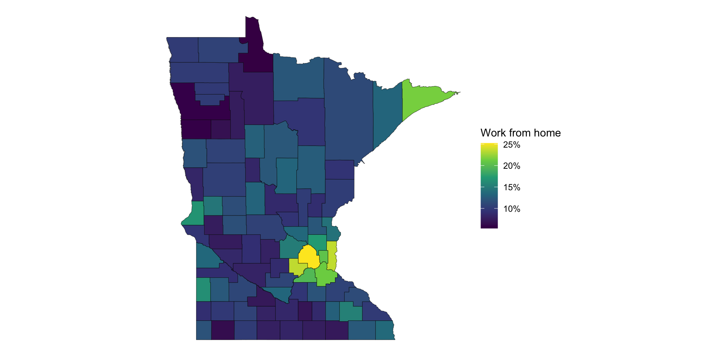

APIs
Day 19
Carleton College
Stat 220 - Fall 2026
What is an API?
“API stands for Application Programming Interface. It is a set of rules and protocols that lets different software applications communicate with each other.
In this class, we’ll use APIs to allow R to communicate with websites. These APIs focus on transmitting raw data, rather than images, fonts, etc. that humans interact with when they visit the page.
For us: an API is a URL that returns data, instead of a web page for humans.
https://api.census.gov/data/2024/acs/acs5?get=NAME,B08301_021E&for=state:27&key=YOUR_KEYWhy use an API?
- Provenance: the data comes directly from the source
- Reproducibility: others can re-run your code and get the same data (or updated data!)
- Customizability: you can ask for exactly the variables, time period, places, etc. that you want
Keys and rate limits
- Most APIs require a key: a long random string that identifies you
- The website uses it to track who is making requests, and to enforce rate limits
- Treat your key like a password
Keep your key out of your .qmd and out of GitHub
Anything you push can be seen by anyone with access to your repo, and git remembers it forever, even if you delete the file later.
Storing your key (once)
Store your key in a file that lives outside your project, using the tidycensus helper:
Then restart R. From now on, R can find the key whenever it needs it:
- The key now lives in a file called
.Renvironin your home folder, not in your repo - You never type the key into a document again
How do we use them?
In this class, we’re going to cover two ways to access API’s:
- with a wrapper R package
- directly with httr requests
Census data
- Every ten years, the US Census Bureau runs a census of the US population. The goal is to survey everybody in the country.
- They also run the American Community Survey, which tracks demographic indicators among a random sample of people every 1, 3, or 5 years
- They also collect a variety of other data:
- PSEO
- Household pulse survey
- Health insurance, poverty statistics, business owners, etc.
Importantly, the data is paid for by the public (via taxes) and is available for use by the public
Our question
How many people work from home, and where?
- The American Community Survey (ACS) asks workers how they get to work
- Table
B08301: Means of transportation to work-
B08301_001: total workers (16 and over) -
B08301_021: worked from home
-
- Share working from home =
B08301_021/B08301_001
get_acs()
-
geography: the level of detail (also “state”, “tract”, …) -
variables: which survey question(s) to get; each has an ID -
summary_var: a total to put alongside each estimate (here, all workers) -
survey = "acs5": the 5-year ACS, which has data for every county -
geometry = TRUE: also download the shapes, so we can map
What you get
Simple feature collection with 5 features and 5 fields
Geometry type: MULTIPOLYGON
Dimension: XY
Bounding box: xmin: -96.06762 ymin: 44.10772 xmax: -91.02074 ymax: 48.20582
Geodetic CRS: NAD83
NAME estimate moe summary_est summary_moe
1 Mahnomen County, Minnesota 130 27 1961 81
2 Hennepin County, Minnesota 173066 2954 686167 3633
3 Lake County, Minnesota 626 124 4747 242
4 Washington County, Minnesota 33344 1621 141463 1570
5 Brown County, Minnesota 947 146 13023 330
geometry
1 MULTIPOLYGON (((-96.06762 4...
2 MULTIPOLYGON (((-93.76804 4...
3 MULTIPOLYGON (((-91.55375 4...
4 MULTIPOLYGON (((-93.0214 44...
5 MULTIPOLYGON (((-95.10878 4...-
estimate: number of people who work from home;moe: the margin of error on that estimate -
summary_est: total number of workers
Share working from home
Which counties have the highest share? Which have the lowest? Why might that be?
Share working from home

How do we find the variable IDs?
There are thousands of IDs. Search the variable labels with load_variables():
# A tibble: 4 × 3
name concept label
<chr> <chr> <chr>
1 B08006_017 Sex of Workers by Means of Transportation to Work Estimate!!Total:…
2 B08006_034 Sex of Workers by Means of Transportation to Work Estimate!!Total:…
3 B08006_051 Sex of Workers by Means of Transportation to Work Estimate!!Total:…
4 B08101_049 Means of Transportation to Work by Age Estimate!!Total:…The same label shows up in several tables. The concept tells you which one you want.
Your turn 1
Make the same map for a different way of getting to work.
- Search
acs_varsfor another means of transportation in the “Means of Transportation to Work” table (e.g., public transportation, walked, drove alone). - Edit the
get_acs()call to get that variable for Minnesota counties, and make the map. - If you have time: try a different state.
05:00
More info about how census/ACS data is reported
https://www.census.gov/acs/www/data/data-tables-and-tools/subject-tables/
What is get_acs doing underneath the hood?
function (geography, variables = NULL, table = NULL, cache_table = FALSE,
year = 2023, output = "tidy", state = NULL, county = NULL,
zcta = NULL, geometry = FALSE, keep_geo_vars = FALSE, shift_geo = FALSE,
summary_var = NULL, key = NULL, moe_level = 90, survey = "acs5",
show_call = FALSE, ...)
{
if (survey == "acs1") {
message(sprintf("Getting data from the %s 1-year ACS",
year))
}
else if (survey == "acs3") {
startyear <- year - 2
message(sprintf("Getting data from the %s-%s 3-year ACS",
startyear, year))
}
else if (survey == "acs5") {
startyear <- year - 4
message(sprintf("Getting data from the %s-%s 5-year ACS",
startyear, year))
}
if (year == 2020 && survey == "acs1") {
msg_acs <- c(crayon::red(stringr::str_wrap("The regular 1-year ACS for 2020 was not released and is not available in tidycensus.")),
i = crayon::cyan(stringr::str_wrap("Due to low response rates, the Census Bureau instead released a set of experimental estimates for the 2020 1-year ACS.")),
i = crayon::cyan(stringr::str_wrap("These estimates can be downloaded at https://www.census.gov/programs-surveys/acs/data/experimental-data/1-year.html.")),
i = crayon::green(stringr::str_wrap("1-year ACS data can still be accessed for other years by supplying an appropriate year to the `year` parameter.")))
rlang::abort(msg_acs)
}
if (shift_geo) {
warning("The `shift_geo` argument is deprecated and will be removed in a future release. We recommend using `tigris::shift_geometry()` instead.",
call. = FALSE)
}
if (survey == "acs5" && year < 2009) {
stop("5-year ACS support in tidycensus begins with the 2005-2009 5-year ACS. Consider using decennial Census data instead.",
call. = FALSE)
}
if (survey == "acs1") {
if (year < 2005) {
stop("1-year ACS support in tidycensus begins with the 2005 1-year ACS. Consider using decennial Census data instead.",
call. = FALSE)
}
message("The 1-year ACS provides data for geographies with populations of 65,000 and greater.")
}
if (survey == "acs3") {
if (year < 2007 || year > 2013) {
stop("3-year ACS support in tidycensus begins with the 2005-2007 3-year ACS and ends with the 2011-2013 3-year ACS. For newer data, use the 1-year or 5-year ACS.",
call. = FALSE)
}
else {
message("The 3-year ACS provides data for geographies with populations of 20,000 and greater.")
}
}
if (length(table) > 1) {
stop("Only one table may be requested per call.", call. = FALSE)
}
if (!is.null(variables)) {
if (any(grepl("^K[0-9].", variables))) {
message("Getting data from the ACS 1-year Supplemental Estimates. Data are available for geographies with populations of 20,000 and greater.")
survey <- "acsse"
}
}
if (!is.null(table)) {
if (grepl("^K[0-9].", table)) {
message("Getting data from the ACS 1-year Supplemental Estimates. Data are available for geographies with populations of 20,000 and greater.")
survey <- "acsse"
}
}
key <- get_census_api_key(key)
if (geography == "block") {
stop("Block data are not available in the ACS. Use `get_decennial()` to access block data from the 2010 Census.",
call. = FALSE)
}
cache <- getOption("tigris_use_cache", FALSE)
if (geometry) {
if (shift_geo) {
message("Using feature geometry obtained from the albersusa package")
}
else if (!shift_geo && !cache) {
message("Downloading feature geometry from the Census website. To cache shapefiles for use in future sessions, set `options(tigris_use_cache = TRUE)`.")
}
}
if (shift_geo && !geometry) {
stop("`shift_geo` is only available when requesting feature geometry with `geometry = TRUE`",
call. = FALSE)
}
if (is.null(variables) && is.null(table)) {
stop("Either a vector of variables or an ACS table must be specified.",
call. = FALSE)
}
if (!is.null(variables) && !is.null(table)) {
stop("Specify variables or a table to retrieve; they cannot be combined.",
call. = FALSE)
}
if (geography == "cbsa") {
geography <- "metropolitan statistical area/micropolitan statistical area"
}
if (geography == "cbg")
geography <- "block group"
if (geography == "zcta")
geography <- "zip code tabulation area"
if (geography == "puma")
geography <- "public use microdata area"
if (grepl("_", geography) & !grepl(" ", geography))
geography <- gsub("_", " ", geography)
if (any(grepl("^S[0-9]|^DP", variables)) && geography ==
"block group") {
stop("Block groups are not an available geography in the Data Profile and Subject Tables datasets.",
call. = FALSE)
}
if (!is.null(zcta) && geography != "zip code tabulation area") {
stop("ZCTAs can only be specified when requesting data at the zip code tabulation area-level.",
call. = FALSE)
}
if (geography == "zip code tabulation area" && length(state) >
1 && !is.null(zcta)) {
zips_to_get <- zcta
zcta <- NULL
}
else {
zips_to_get <- NULL
}
insist_get_acs <- purrr::insistently(get_acs)
if (year < 2013) {
if (geography == "block group") {
stop("Block groups are not currently available for the 2008-2012 ACS and earlier.\nIf access to these datasets is restored, tidycensus will again support them.",
call. = FALSE)
}
if ((geography == "block group" && length(state) == 1 &&
is.null(county))) {
st <- suppressMessages(validate_state(state))
if (year < 2013) {
tigris_yr <- 2010
}
else {
tigris_yr <- year
}
cty_year <- suppressMessages(counties(state = st,
cb = TRUE, resolution = "20m", year = tigris_yr,
class = "sf"))
county <- cty_year$COUNTYFP
}
if (geography == "block group" && length(state) > 1) {
if (!is.null(county)) {
stop("Don't know which counties belong to which states. County must be null when requesting multiple states.",
call. = FALSE)
}
else {
message("Fetching block group data by state and county and combining the result.")
if (geometry) {
result <- map(state, function(s, ...) {
suppressMessages(insist_get_acs(geography = geography,
variables = variables, table = table, cache_table = cache_table,
year = year, output = output, state = s,
county = county, zcta = zcta, summary_var = summary_var,
geometry = geometry, keep_geo_vars = keep_geo_vars,
shift_geo = FALSE, key = key, moe_level = moe_level,
survey = survey, show_call = show_call,
...))
}, ...) %>% reduce(rbind)
geoms <- unique(st_geometry_type(result))
if (length(geoms) > 1) {
result <- st_cast(result, "MULTIPOLYGON")
}
result <- result %>% as_tibble() %>% st_as_sf()
}
else {
result <- map_df(state, ~{
suppressMessages(insist_get_acs(geography = geography,
variables = variables, table = table, cache_table = cache_table,
year = year, output = output, state = .x,
county = county, zcta = zcta, summary_var = summary_var,
geometry = geometry, keep_geo_vars = keep_geo_vars,
shift_geo = FALSE, key = key, moe_level = moe_level,
survey = survey, show_call = show_call))
})
}
return(result)
}
}
}
if (length(unique(substr(variables, 1, 1))) > 1 && !all(unique(substr(variables,
1, 1)) %in% c("B", "C"))) {
if (any(grepl("^K[0-9].", variables))) {
stop("At the moment, supplemental estimates variables cannot be combined with variables from other datasets.",
call. = FALSE)
}
if (any(grepl("^CP[0-9].", variables))) {
stop("Comparison profiles variables cannot be mixed with variables from other datasets in tidycensus; please request CP data separately.",
call. = FALSE)
}
message("Fetching data by table type (\"B/C\", \"S\", \"DP\") and combining the result.")
vars_by_type <- map(c("^B|^C", "^S", "^D"), ~variables[str_detect(variables,
.x)]) %>% purrr::compact()
if (geometry) {
if (output == "wide") {
vars_first <- vars_by_type[[1]]
vars_rest <- vars_by_type[-1]
result_geo <- suppressMessages(insist_get_acs(geography = geography,
variables = vars_first, table = table, cache_table = cache_table,
year = year, output = output, state = state,
county = county, zcta = zcta, summary_var = summary_var,
geometry = geometry, keep_geo_vars = keep_geo_vars,
shift_geo = FALSE, key = key, moe_level = moe_level,
survey = survey, show_call = show_call, ...))
result_no_geo <- map(vars_rest, ~suppressMessages(insist_get_acs(geography = geography,
variables = .x, table = table, cache_table = cache_table,
year = year, output = output, state = state,
county = county, zcta = zcta, summary_var = summary_var,
geometry = FALSE, keep_geo_vars = keep_geo_vars,
shift_geo = FALSE, key = key, moe_level = moe_level,
survey = survey, show_call = show_call)))
if (year == 2010) {
result_no_geo <- result_no_geo %>% reduce(left_join,
by = "GEOID")
}
else {
result_no_geo <- result_no_geo %>% reduce(left_join,
by = c("GEOID", "NAME"))
}
if (keep_geo_vars) {
join_cols <- c("GEOID", NAME.y = "NAME")
}
else {
join_cols <- c("GEOID", "NAME")
}
result <- result_geo %>% left_join(result_no_geo,
by = join_cols) %>% select(-geometry, geometry)
}
else {
result <- map(vars_by_type, function(v, ...) {
suppressMessages(insist_get_acs(geography = geography,
variables = v, table = table, cache_table = cache_table,
year = year, output = output, state = state,
county = county, zcta = zcta, summary_var = summary_var,
geometry = geometry, keep_geo_vars = keep_geo_vars,
shift_geo = FALSE, key = key, moe_level = moe_level,
survey = survey, show_call = show_call, ...))
}, ...) %>% reduce(rbind)
}
geoms <- unique(st_geometry_type(result))
if (length(geoms) > 1) {
result <- st_cast(result, "MULTIPOLYGON")
}
result <- result %>% as_tibble() %>% st_as_sf()
}
else {
if (output == "wide") {
result <- map(vars_by_type, ~suppressMessages(insist_get_acs(geography = geography,
variables = .x, table = table, cache_table = cache_table,
year = year, output = output, state = state,
county = county, zcta = zcta, summary_var = summary_var,
geometry = geometry, keep_geo_vars = keep_geo_vars,
shift_geo = FALSE, key = key, moe_level = moe_level,
survey = survey, show_call = show_call)))
if (year == 2010) {
result <- result %>% reduce(left_join, by = "GEOID")
}
else {
result <- result %>% reduce(left_join, by = c("GEOID",
"NAME"))
}
}
else {
result <- map_df(vars_by_type, ~suppressMessages(insist_get_acs(geography = geography,
variables = .x, table = table, cache_table = cache_table,
year = year, output = output, state = state,
county = county, zcta = zcta, summary_var = summary_var,
geometry = geometry, keep_geo_vars = keep_geo_vars,
shift_geo = FALSE, key = key, moe_level = moe_level,
survey = survey, show_call = show_call)))
}
}
return(arrange(result, GEOID))
}
if ((geography == "tract" || geography == "block group") &&
length(state) > 1) {
message(sprintf("Fetching %s data by state and combining the result.",
geography))
if (geometry) {
result <- map(state, function(s, ...) {
suppressMessages(insist_get_acs(geography = geography,
variables = variables, table = table, cache_table = cache_table,
year = year, output = output, state = s, county = county,
zcta = zcta, summary_var = summary_var, geometry = geometry,
keep_geo_vars = keep_geo_vars, shift_geo = FALSE,
key = key, moe_level = moe_level, survey = survey,
show_call = show_call, ...)) %>% st_cast("MULTIPOLYGON")
}, ...) %>% reduce(rbind)
geoms <- unique(st_geometry_type(result))
if (length(geoms) > 1) {
result <- st_cast(result, "MULTIPOLYGON")
}
result <- result %>% as_tibble() %>% st_as_sf()
}
else {
result <- map_df(state, ~{
suppressMessages(insist_get_acs(geography = geography,
variables = variables, table = table, cache_table = cache_table,
year = year, output = output, state = .x, county = county,
zcta = zcta, summary_var = summary_var, geometry = geometry,
keep_geo_vars = keep_geo_vars, shift_geo = FALSE,
key = key, moe_level = moe_level, survey = survey,
show_call = show_call))
})
}
return(result)
}
if (year < 2013) {
if ((geography == "block group" && length(county) > 1)) {
if (geometry) {
message("Fetching block group data by county and combining the result.")
result <- map(county, function(co, ...) {
suppressMessages(insist_get_acs(geography = geography,
variables = variables, table = table, cache_table = cache_table,
year = year, output = output, state = state,
county = co, zcta = zcta, summary_var = summary_var,
geometry = geometry, keep_geo_vars = keep_geo_vars,
shift_geo = FALSE, key = key, moe_level = moe_level,
survey = survey, show_call = show_call, ...)) %>%
st_cast("MULTIPOLYGON")
}, ...) %>% reduce(rbind)
geoms <- unique(st_geometry_type(result))
if (length(geoms) > 1) {
result <- st_cast(result, "MULTIPOLYGON")
}
result <- result %>% as_tibble() %>% st_as_sf()
}
else {
message("Fetching block group data by county and combining the result.")
result <- map_df(county, ~{
suppressMessages(insist_get_acs(geography = geography,
variables = variables, table = table, cache_table = cache_table,
year = year, output = output, state = state,
county = .x, zcta = zcta, summary_var = summary_var,
geometry = geometry, keep_geo_vars = keep_geo_vars,
shift_geo = FALSE, key = key, moe_level = moe_level,
survey = survey, show_call = show_call))
})
}
return(result)
}
}
if (moe_level == 90) {
moe_factor <- 1
}
else if (moe_level == 95) {
moe_factor <- (1.96/1.645)
}
else if (moe_level == 99) {
moe_factor <- (2.576/1.645)
}
else {
stop("`moe_level` must be one of 90, 95, or 99.", call. = FALSE)
}
if (!is.null(table)) {
if (grepl("^S[0-9].", table)) {
survey2 <- paste0(survey, "/subject")
}
else if (grepl("^DP[0-9].", table)) {
survey2 <- paste0(survey, "/profile")
}
else if (grepl("^K[0-9].", table)) {
survey2 <- "acsse"
}
else if (grepl("^CP[0-9].", table)) {
survey2 <- paste0(survey, "/cprofile")
}
else {
survey2 <- survey
}
variables <- variables_from_table_acs(table, year, survey2,
cache_table)
}
if (length(variables) > 24) {
l <- split(variables, ceiling(seq_along(variables)/24))
dat <- map(l, function(x) {
vars <- format_variables_acs(x)
suppressWarnings(load_data_acs(geography, vars, key,
year, state, county, zcta, survey, show_call = show_call))
}) %>% Reduce(function(x, y) full_join(x, y, by = "GEOID",
suffix = c("", ".y")), .)
}
else {
vars <- format_variables_acs(variables)
dat <- suppressWarnings(load_data_acs(geography, vars,
key, year, state, county, zcta, survey, show_call = show_call))
}
vars2 <- format_variables_acs(variables)
var_vector <- unlist(strsplit(vars2, split = ","))
if (output == "tidy") {
sub <- dat[c("GEOID", "NAME", var_vector)]
if (packageVersion("tidyr") > "0.7.2") {
dat2 <- sub %>% gather(key = variable, value = value,
-GEOID, -NAME) %>% separate(variable, into = c("variable",
"type"), sep = -1) %>% mutate(type = ifelse(type ==
"E", "estimate", "moe")) %>% spread(type, value)
}
else {
dat2 <- sub %>% gather(key = variable, value = value,
-GEOID, -NAME) %>% separate(variable, into = c("variable",
"type"), sep = -2) %>% mutate(type = ifelse(type ==
"E", "estimate", "moe")) %>% spread(type, value)
}
dat2[dat2 == -111111111] <- NA
dat2[dat2 == -222222222] <- NA
dat2[dat2 == -333333333] <- NA
dat2[dat2 == -444444444] <- NA
dat2[dat2 == -555555555] <- NA
dat2[dat2 == -666666666] <- NA
dat2[dat2 == -777777777] <- NA
dat2[dat2 == -888888888] <- NA
dat2[dat2 == -999999999] <- NA
if ("moe" %in% names(dat2)) {
dat2 <- mutate(dat2, moe = moe * moe_factor)
}
if (!is.null(names(variables))) {
for (i in 1:length(variables)) {
dat2[dat2 == variables[i]] <- names(variables)[i]
}
}
}
else if (output == "wide") {
dat <- dat[!duplicated(names(dat), fromLast = TRUE)]
dat <- dat[c("GEOID", "NAME", var_vector)]
dat[dat == -111111111] <- NA
dat[dat == -222222222] <- NA
dat[dat == -333333333] <- NA
dat[dat == -444444444] <- NA
dat[dat == -555555555] <- NA
dat[dat == -666666666] <- NA
dat[dat == -777777777] <- NA
dat[dat == -888888888] <- NA
dat[dat == -999999999] <- NA
dat2 <- dat %>% mutate_if(grepl("*M$", names(.)), list(~(. *
moe_factor)))
if (!is.null(names(variables))) {
for (i in 1:length(variables)) {
names(dat2) <- str_replace(names(dat2), variables[i],
names(variables)[i])
}
}
dat2 <- dat2 %>% select(GEOID, NAME, everything())
}
if (geography == "zip code tabulation area" && year > 2012 &&
unique(nchar(dat2$GEOID)) == 7) {
dat2 <- dat2 %>% dplyr::mutate(GEOID = stringr::str_sub(GEOID,
start = 3L))
}
if (!is.null(summary_var)) {
if (length(summary_var) > 1) {
stop(paste0("Only one summary variable may be used per pull. ",
"Alternatively, place all variables in `variables` and ",
"use `output='wide'`"))
}
sumvar <- format_variables_acs(summary_var)
sumdat <- suppressMessages(load_data_acs(geography, sumvar,
key, year, state, county, zcta, survey))
sumest <- paste0(summary_var, "E")
summoe <- paste0(summary_var, "M")
if (geography == "zip code tabulation area" && year >
2012 && unique(nchar(sumdat$GEOID)) == 7) {
sumdat <- sumdat %>% dplyr::mutate(GEOID = stringr::str_sub(GEOID,
start = 3L))
}
dat2 <- dat2 %>% inner_join(sumdat, by = "GEOID") %>%
rename(summary_est = !!sumest, summary_moe = !!summoe,
NAME = "NAME.x") %>% select(-NAME.y) %>% mutate(summary_moe = round(summary_moe *
moe_factor, 0))
dat2[dat2 == -111111111] <- NA
dat2[dat2 == -222222222] <- NA
dat2[dat2 == -333333333] <- NA
dat2[dat2 == -444444444] <- NA
dat2[dat2 == -555555555] <- NA
dat2[dat2 == -666666666] <- NA
dat2[dat2 == -777777777] <- NA
dat2[dat2 == -888888888] <- NA
dat2[dat2 == -999999999] <- NA
}
if (!is.null(zips_to_get)) {
dat2 <- dat2 %>% dplyr::filter(GEOID %in% zips_to_get)
}
if (geometry) {
if (shift_geo) {
if (!is.null(state)) {
stop("`shift_geo` is only available when requesting geometry for the entire US",
call. = FALSE)
}
message("Please note: Alaska and Hawaii are being shifted and are not to scale.")
if (geography == "state") {
geom <- tidycensus::state_laea
}
else if (geography == "county") {
geom <- tidycensus::county_laea
if (year > 2014) {
geom$GEOID[geom$GEOID == "46113"] <- "46102"
geom$GEOID[geom$GEOID == "02270"] <- "02158"
}
}
else {
stop("`shift_geo` is only available for states and counties",
call. = FALSE)
}
}
else {
if (geography == "zip code tabulation area") {
geom <- try(suppressMessages(use_tigris(geography = geography,
year = year, state = NULL, county = NULL, ...)))
}
else {
geom <- try(suppressMessages(use_tigris(geography = geography,
year = year, state = state, county = county,
...)))
}
if ("try-error" %in% class(geom)) {
stop("Your geometry data download failed. Please try again later or check the status of the Census Bureau website at https://www2.census.gov/geo/tiger/",
call. = FALSE)
}
}
if (!keep_geo_vars) {
geom <- select(geom, GEOID, geometry)
}
args <- list(...)
if (shift_geo || geography == "zip code tabulation area" ||
"filter_by" %in% names(args)) {
out <- inner_join(geom, dat2, by = "GEOID") %>% st_as_sf()
}
else {
out <- right_join(geom, dat2, by = "GEOID") %>% st_as_sf()
}
return(out)
}
else {
return(dat2)
}
}
<bytecode: 0x1257690b0>
<environment: namespace:tidycensus>If we add show_call = TRUE, we obtain the following output:
Getting data from the 2016-2020 5-year ACS
Downloading feature geometry from the Census website. To cache shapefiles for use in future sessions, set `options(tigris_use_cache = TRUE)`.
Using FIPS code '27' for state 'MN'
Census API call: https://api.census.gov/data/2020/acs/acs5?get=B01003_001E%2CB01003_001M%2CB19013_001E%2CB19013_001M%2CNAME&for=tract%3A%2A&in=state%3A27Anatomy of a Census API URL
-
Host:
https://api.census.gov/data -
Year:
/2024 -
Dataset:
/acs/acs5(the 5-year ACS) -
?get=the variables:NAME,B08301_001E(all workers),B08301_021E(worked from home) -
&for=the geography:county:*means “all counties”… -
&in=…in this state:state:27(27 is Minnesota’s FIPS code) -
&key=who you are
E = estimate, M = margin of error. (Add B08301_021M to get= to ask for it.)
Try it in your browser
Paste the URL into your browser, replacing YOUR_KEY with your key.
You should see rows of JSON: a list of lists, with the first row giving the column names.
02:00
How do we talk to the API directly?
Step 1: build the request
wfh_request <- request("https://api.census.gov/data") |>
req_url_path_append("2024") |>
req_url_path_append("acs") |>
req_url_path_append("acs5") |>
req_url_query(
get = c("NAME", "B08301_001E", "B08301_001M", "B08301_021E", "B08301_021M"),
`for` = I("county:*"),
`in` = I("state:27"),
key = Sys.getenv("CENSUS_API_KEY"),
.multi = "comma"
)What are those arguments?
-
request()sets the host name;req_url_path_append()adds the year and the dataset -
req_url_query()adds the?get=...&for=...&in=...part-
.multi = "comma"joins several values with commas -
I("county:*")means “leave this exactly as is” (don’t escape the:and*) -
`for`and`in`need backticks because they are reserved words in R
-
-
Sys.getenv("CENSUS_API_KEY")reads your key from.Renviron, so it never appears in your document
Step 2: send it
Status: 200 OK
Content-Type: application/json
Body: In memory (6011 bytes)If it worked, wfh_response says Status: 200 OK.
(404 = not found, 429 = too many requests. If you forget the key, you’ll get a “Missing Key” web page instead of data.)
Step 3: get a tibble
[1] "matrix" "array" [,1] [,2] [,3] [,4]
[1,] "NAME" "B08301_001E" "B08301_001M" "B08301_021E"
[2,] "Aitkin County, Minnesota" "6132" "187" "777"
[3,] "Anoka County, Minnesota" "191607" "2070" "32865"
[,5] [,6] [,7]
[1,] "B08301_021M" "state" "county"
[2,] "73" "27" "001"
[3,] "1497" "27" "003" The first row is the column names. Move it into the header, then make the numbers numeric
Step 3: get a tibble
# A tibble: 5 × 4
NAME B08301_021E B08301_001E pct_wfh
<chr> <dbl> <dbl> <dbl>
1 Aitkin County, Minnesota 777 6132 0.127
2 Anoka County, Minnesota 32865 191607 0.172
3 Becker County, Minnesota 1723 16179 0.106
4 Beltrami County, Minnesota 1636 21221 0.0771
5 Benton County, Minnesota 2098 22077 0.0950Why on earth would we do this instead of using the URL
- To generalize the code with functions (this is what wrapper packages do!)
- To handle special characters (URLs can’t contain spaces)
- To iterate over multiple years, or multiple geometries, or ….
⚠️ Printing requests prints your key
If you print(request) or print(response) in a document you knit and push, your key goes with it.
- Don’t print the request or response in your final document
- Never type the key into your code: use
Sys.getenv("CENSUS_API_KEY") - If you slip up: get a new key, and ask for help removing the old one from your repo
Your turn 2
How has working from home changed in Minnesota?
- Edit the
httr2code to getB08301_001EandB08301_021Efor Minnesota as a whole from the 2024 1-year ACS.- Dataset:
acs/acs1. For one state, use`for` = I("state:27")(and noin).
- Dataset:
- Make the same request for 2019. Compute the share working from home in each year. What changed?
- Now try 2020. What happens? What does the error message say?
10:00
Why is there no 2020?
- The Census Bureau did not release the standard 2020 1-year ACS: data collection during the first year of COVID-19 was too disrupted
- So a request for
2020/acs/acs1fails with404 Not Found - The 5-year ACS does have 2020, and uses a different dataset name (
acs/acs5)
An API error is a message from the website, not (necessarily) a mistake in your code.
Next up: HW 8
- Make requests for several years, and combine results
- Wrap the request in a function, so that you can call it once per year without rewriting the {httr} request
- Use what you know about iteration (!!) to call your function for each year
Neat Wrapper packages or APIs
- SportsDataverse has a ton of R packages for accessing a variety of sports data
- Public APIs
-
Urban Institute’s Education Data Portal and R package
- ROpenSci